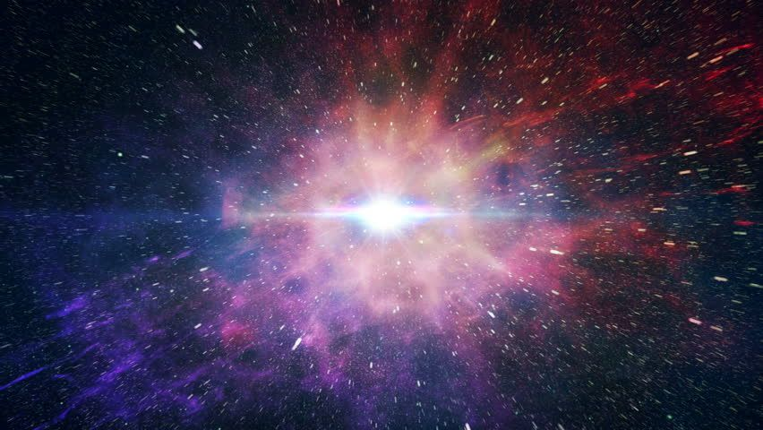

Big Bang — A origem do Universo
A teoria do Big Bang é a que descreve a origem do universo, é uma explicação de como ele surgiu. A aproximadamente 13,8B. de anos atrás, que é considerada a idade do universo, nessa teoria dizem que o universo surgiu a partir da expansão repentina e violenta de uma partícula extremamente densa e quente. Segundos após o início da expansão, o Universo era composto essencialmente por um conjunto de partículas chamado de plasma de quark-glúons, conhecidos como “sopa primordial” sua temperatura era de 5,5 Bilhões de graus Celsius. Esse plasma foi resfriando e as partículas que deram origem a elementos como a luz. Ou seja, nessa teoria o universo todo era como uma bola de borracha que se encheu e se transformou no universo, o big bang não foi uma "explosão" comum no espaço, mas sim a expansão rápida do próprio espaço e do tempo a partir de um ponto extremamente quente e denso.
